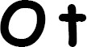

Kruvazörün derinliklerine giden merdiven çok dikti; aşağılara doğru indikçe, metal basamaklarda adımlarının yankısı aşama aşama artmaktaydı.
Craig Frewin su geçirmez kapı eşiklerinin üzerinden atlıyor, önlerinde hızla yürüyen subayın peşinden bir an olsun ayrılmadan, beyazımsı bir ışıkla aydınlatılan labirent gibi koridorlarda ilerliyordu.
Gemi sessizdi, ne bir fısıltı ne bir makine uğultusu vardı; boruların sıralandığı koridorlarda çıt çıkmıyordu.
Frewin neredeyse yirmi senedir MP'deydi. Sarsılmaz mantığı ve kendine olan güveniyle kısa sürede askeri hiyerarşide yükselmiş ve kendi ekibini yönetme imkânı bulmuştu. Daha ziyade kötü davranışlar ve askerler arasındaki kavgalarla ilgilenmekteydi. Kimi zaman saldırılarla. Kimi zaman da cinayetlerle. İşini biliyordu. Orduyu, ordu zihniyetini ve katılığını tanıyordu. Her şey işlevsel ve düzenliydi. Soruşturmalar bu sayede büyük ölçüde kolaylaşıyordu. Açığa çıkan suçların birçoğu aynı nedenlerden –amacını aşan şiddet– kaynaklanıyordu. Daha nadiren rastlanan ve hiyerarşi tarafından üstü kapatılan bir başka suç türü de tecavüzün ardından işlenen cinayetlerdi. Eşcinsellik ise ordu içinde kıvılcımlara sebep olurdu. Burada sadece maçoluk ve erkeklik hoş görülürdü.
Bu kez nöbetçi subay, cesedi bulan muhafızın paniğe kapıldığını görmüştü. Muhafız aklını kaybetmiş gibi, yarı insan yarı hayvan bir yaratıktan bahsederek gemide bir şeytan oluğunu sayıklamıştı. Söylentinin yayılmaması için asker hemen geminin revirine indirilmişti. Ancak söylenti yine de nöbetçiler arasında hemen yayılmıştı. Bunun üzerine subay ne olup bittiğini kendisi görmek istemişti. Gördüklerinden sonra da rengi bir türlü yerine gelmemişti.
Frewin'i uyarmıştı: "Kendinizi hazırlayın, aşağıda bulunan... şey inanılacak gibi değil. Bu... şeytani! Suçluları bulmak gerekiyor, hem de hemen!"
Frewin kruvazörün derinliklerine doğru inerken bu sözleri kafasında evirip çevirmekteydi. Subay, şeytani kelimesi üzerinde ısrarla durmuştu, bu kelimeyi seçmek için epeyi düşünmüştü. Ve suçlular demişti, suçlu değil... Onları aşağıda ne bekliyordu?
Subay Coolidge çok uzun bir koridorun ortasında yavaşladıktan sonra kapalı bir kapının önünde durdu. Kapı, birbirinden uzakta iki idare lambasından gelen zayıf ışıkta belli belirsiz seçiliyordu.
Coolidge döndü ve soğuk kapı kolunu çevirmeden önce Frewin, Ann Dawson ve Clauwitz'in iyice yaklaşmalarını bekledi.
"Matmazel, belki dışarıda beklemeniz daha iyi..."
Subayın alnındaki ter damlalarını fark eden Ann, "Ben bunlara alışığım" diye kısa kesti.
Dudaklarını büzmekle yetinen Coolidge ısrar etmedi. Kapı kolunu aşağı indirerek kapıyı itti.
Frewin astına emir verdi:
"Sen burada kal! İçeri kimse girmesin, sadece geldiğinde Matters girebilir!"
Odanın tamamen karanlık olması Frewin'i şaşırttı. Hiçbir yerden ışık gelmiyordu.
"Lambaları siz mi söndürdünüz?" diye merakla sordu.
"Hayır, onu bulduğumuzda oda aynen bu şekildeydi." Subayın titrek sesi yankılandı, oda büyük olmalıydı. "Işığı açtım, çıkarken de kapattım."
Frewin bir basamak aşağı inerek odanın içinde birkaç adım attı.
Lambaların tümü yanınca odaya kör edici bir ışık yayıldı.
Sıralar ve masalar, daha sonra tabak çanak rafları ve uzun bir tezgâh ortaya çıktı. Yemekhane, diye düşündü Frewin. Yüz kişinin aynı zamanda yemek yiyebileceği bir mekân.
Salonun ortasında, koyu lekelerle harelenmiş haki bir üniforma içinde dört adet kol ve bacak cansız bir halde sallanmaktaydı. Bir insan bedeni. Bir canavar başı. İki iri göz, kıvrık boynuzlar, ıslak bir burun ucu. Tehditkâr bir çeneyi ortaya çıkarmak için kopartılmış dudaklar.
Bu keçi ile insan karışımı yaratık havada süzülüyordu.
Ann elini ağzına götürerek çığlığını hapsetti.
Ceset iki kasap çengeliyle omuzlarından metal kirişe asılmıştı.
Frewin gözlerine inanamayarak yavaşça yaklaştı.
"Bastığınız yere dikkat edin" diye uyardı Coolidge.
Frewin tam zamanında bakışlarını aşağıya indirerek yerdeki kan gölünü fark etti. İçinden lanet okuyarak ayağını geri çekti. Her zamanki titiz haline hiç uymuyordu bu hareketi. Dikkatini tekrar hayvan adama verdi. Şimdiye kadar hiç böyle bir şey görmemişti. Kurbanın başı kesilmişti; hayvan başı büyük bir özenle boynun üzerine oturtulmuştu. Kan, bu bölgedeki deriyi tamamen kaplamış, üniformanın üst kısmı ıslanmıştı.
"Sizi uyarmıştım" dedi Coolidge. Başkalarının da tedirginlik duyması sanki onu rahatlatmış, kendine olan güvenini geri getirmişti. "Bu domuzları hemen yakalamak gerek."
Frewin kaşlarını kaldırdı.
"Size birkaç kişi olduklarını düşündüren nedir?" diye sordu.
"E, yani... Bir cesedi çalabilmek için iyi bir organizasyon gerekir, tek bir adamın bunu yapabileceğini..."
"Bir cesedi çalmak?" diye tekrar etti Frewin. "Sizi anlayamadım."
"Evet" dedi subay, cesedi işaret ederek. "Bu çok açık! Bu muhtemelen morgdan yapılan bir hırsızlık, tatsız bir şaka."
Bu varsayım karşısında şaşıran Ann, soruşturmacının tepkisini izledi. Frewin gözlerini deniz subayına dikmişti.
"İyimser sonuçlarınıza inanmak isterdim ama" dedi kararlılıkla, "bu bir ceset hırsızlığı değil. Bunun bir cinayet olması çok daha muhtemel."
Coolidge yüzünü buruşturarak gülümsemeye çalıştı.
"Yok, olamaz, imkânsız. Kim böyle bir şey yapabilir? Orduya ait bir gemideyiz, bir tımarhanede değil! Şuna bakın, şu teke başına! Bu, tatsız şakaları seven birilerinin işi ve neden biliyor musunuz? Çünkü bir katil böyle davranmaz! Yani bu ortada! Bir teke kafası... Bu çok garip!
"Bir koç başı galiba" diye fısıldadı Ann. "Bu bir koç başı."
Frewin ona ve Coolidge'e aldırmadan etrafına bakındı. İki masanın arasında, kenarda bir kan gölü vardı. Kızıl kan damlaları, patlayan damarlarla birlikte yaşamın bedenden nasıl çıktığını gösterircesine çizgiler ve noktalar halinde döşemeye yayılmıştı. Teğmen, dikkatle bakıp gördüklerini hafızasına kaydederek cesedin etrafında dolandı. Yüz ifadesinde en ufak heyecan belirtisi yoktu; bununla birlikte sol yumruğunu asabi hareketlerle sıkıp duruyordu.
Frewin, teftişini bitirdikten sonra bir masanın üzerine oturarak kanlı manzarayı izledi.
Çengeller kürekkemiklerinin arasına gömülmüştü.
"Geceleri kapı kilitleniyor mu?" dedi bakışlarını cesetten ayırmadan.
"Hayır. İçeride gizlenecek bir şey yok, zaten o saatte herkes uyuyor. Köprüde nöbet tutan dört adamım var; savaş zamanında gemi kaptanımızın üzerinde hassasiyetle durduğu bir uygulama bu. Ama geminin içinde sadece iki nöbetçi tutuluyor, daha fazlasına ihtiyaç yok. Şu sırada gemide üç bölük, yani yaklaşık altı yüz asker ve bunlara ilaveten gemi mürettebatı bulunuyor, bu da çok adam demek. Ayrıca hepsinin başında subayları da var. Bir kargaşa olsa mutlaka duyulurdu."
Frewin, kurbanın kan içindeki ellerini gösterdi.
"Burada fark edilmeden bir kavganın yaşanamayacağını mı söylüyorsunuz?" diye ısrar etti.
"E, yani... yakında bir kamara yok ama yine de bu kavganın çok kısa sürmüş olması gerekir. Nöbet tutan askerler her on beş-yirmi dakikada bir bu koridordan geçer." Coolidge bir an tereddüt etti. "Bir cinayet olduğundan eminsiniz, öyle değil mi? Sonu kötüye varan bir kavga olduğunu mu düşünüyorsunuz?"
Frewin, subaya kısa bir bakış fırlattı. Adam kendisine kabul ettirilmek istenen bu delice cinayet varsayımı ile ordunun sıkı kurallarına olan inancı arasında sıkışıp kalmış gibiydi. Sahneye konan bu hadiseye akılcı bir çözüm bulmaya çalışıyordu. Frewin adamı idare etmekten vazgeçti.
"İki adam kavga ettikten sonra, galip gelenin, diğerinin kafasının yerine bir hayvan başı koyduğuna hiç şahit oldunuz mu?"
Coolidge karşılık vermedi. Ann sahnenin bütününü görebilmek için biraz geri çekildi. Üşümüş gibi kollarını vücuduna iyice yapıştırarak ellerini formasının ceplerine sokmuştu.
Coolidge'in alnı şüpheyle kırışmıştı.
"Yani siz... gerçekten bir cinayet olduğuna mı inanıyorsunuz?" diye sordu.
Frewin soruya cevap vermeden önce bir an düşündü.
"Döşemede çok fazla kan var. Ve her yöne sıçramış. Demek ki damarları kesmeden önce kalp hâlâ atıyormuş. Bu, morgdan çalınmış bir ceset değil. Üzgünüm."
Coolidge sustu. Kabul etmekte zorlanarak olayları kafasında evirip çeviriyordu.
"İşin kötüsü" dedi Frewin, "bu, önceden tasarlanmış bir cinayet."
"Nasıl?" diye kekeledi nöbetçi subay.
"Gemide koç bulunduruyor musunuz? Çünkü bu baş yeni kesilmiş, son derece belli. Yaklaşın."
Yemekhanenin girişinde duran Coolidge, sırtını dikleştirerek ellerini kemerinin üzerine yerleştirdi ama ileri doğru bir adım atmadı. Frewin onu bu durumdan kurtararak sözlerine devam etti:
"İçerideki gece nöbetçisi kol gezerken her defasında bu odaya uğrar mı?"
"Hayır... o kadar çok koridor, kat ve salon var ki, her yeri dolaşırlar ama salonları sadece nöbet başlangıcında ve sonunda kontrol ederler. Bu gece nöbet tutan askerleri sorguladım, biri 22.00'ye doğru yemekhaneyi kontrol ettiğini söyledi, sonra 01.00'e kadar buraya uğranmamış."
"Elimizde üç saatlik bir zaman dilimi var. Bunu yapan her kimse, geminin âdetlerini iyi biliyormuş."
Teğmen, gördüklerinin üzerinde düşünürken kollarını göğsünde kavuşturdu.
"Canlı olduğundan emin misiniz?" diye ısrarla sordu subay.
"Döşemeye yayılan kan lekelerinin uzunluğuna bakın. Bir buçuk, hatta neredeyse iki metreye yakın. Kalp parçalandığı sırada atıyor ve bedene kan pompalamaya devam ediyormuş. Kalp atmaya, tüm bu kanı pompalamaya ve dışarı atmaya devam etmiş."
Üç adım geri attı ve girişin az uzağındaki kan gölünü işaret etti.
"Kurban burada, masaların arasındayken kıstırılmış."
Ann aniden yaklaşarak bir şeyi incelemek için çömeldi.
"Burada harfler var" diye açıkladı.
Frewin bunları daha yakından görebilmek için eğildi. Büyük kan birikintisinden sonra küçük birikintiler ve serpintiler cesedin asılı olduğu yere kadar bir çizgi halinde uzanmaktaydı. Ceset ya sürüklenmiş ya da beceriksizce taşınmıştı. Ann kanla yazılmış iki harfi gösterdi:

"O.T." diye yüksek sesle okudu. "Bir sözcüğün ilk iki harfi mi?"
"Ya da bir şeyin baş harfleri mi?" diye ilave etti Frewin.
Ann derin bir nefes aldı; bu, sükûnetini korumada ona yardımcı oluyordu. Hemşireliğinin ilk yıllarında kan görmeye alışacağını düşünmüştü. Bu doğru değildi. Dayanıklılık kazanmış, parçalanmış bedenlerle bir arada olmayı öğrenmiş, ama bütün bunların sonunda bu durumlara asla alışılamadığını keşfetmişti. Kabulleniliyordu. Kimi meslektaşları, kan gördüklerinde hiç etkilenmiyordu. Ann onlar adına üzülüyordu. Yaptıkları veya gördükleriyle kendi aralarına öylesine bir mesafe koymuşlardı ki esas olanı, yani yaşamı unutmaya başlamışlardı. Kan aktığında, saf haldeki yaşam yok olurdu, kan ruhun özüydü ve her damlası yaşamın sancağı gibi parlardı. Ann kana çok özel bir ilgi duyuyordu. Kanla her karşılaşması, diğeri üzerine, kendi üzerine bir çalışmaydı. Bu sürekli mücadele, bu kan bilinci olduğu için Ann mesleğinde doğru yerde durduğunu düşünmekteydi.
"Kurban, saldırganın kimliğini belirtmek için mesaj bırakmış olabilir mi?" diye sordu.
Frewin karşılık vermedi.
"Olamaz mı?" diye sordu genç kadın şaşkınlıkla. "Elleri kan içinde, parmaklarının uçları da."
Teğmen başını salladı.
"Matmazel Dawson, siz hiç boğazı kesilmiş bir nöbetçi görmemişsiniz" dedi nihayet. "Boğazı kesilen insan paniğe kapılır; bedenine saplanan, derisini, kaslarını, damarlarını, ses tellerini parçalayan bıçak kadar, korku da onu delik deşik eder. Kan ilk önce soluk borusundan aşağı doğru akar, sonra da dışarı. Çektiği acı kadar kendisini ikiye ayıran bu ölüm biçimi de insanı dehşet içinde bırakır. Hiç kimse böyle bir durumda saldırganını açığa çıkarmak için bir işaret bırakmayı düşünemez. Bana inanın, kimse. Sizin dediğiniz şey sadece romanlarda olur. Gerçekte ise hırıltı, acı ve ölçüsüz bir korkudan başka bir şey yoktur."
"O vakit bunlar ne? Gelişigüzel çizilmiş işaretler olmadığını siz de gayet iyi görüyorsunuz."
Frewin gerçeği göstermek ister gibi ellerini iki yana açtı.
"Bunları yapan katilin ta kendisi."
Ann kaşlarını çattı.
"Bunu niye yapsın?" diyen genç kadın arkasını dönerek döşemeyi işaret etti. "Neredeyse sıranın altına gizlenmiş."
"Bilemiyorum. Sadece bir olasılık, hepsi bu."
Dikkatini başka bir şey çekmiş ve son cümleyi dalgınlıkla sarf etmişti. Duvara doğru yürüdü ve idare lambasını gösterdi. Kırılmıştı, cam parçaları yerde parlıyordu.
"Burada mı boğuşmuşlar?" diye sordu Coolidge.
"Hayır, burada kan yok. Ve boğuştuklarını da sanmıyorum. İnsan genellikle arkasından boğazlanır. Kurbanın, gece yarısı, nedenini bulmamız gereken bir gerekçeyle buraya geldiğini düşünüyorum. İdare lambası kırıldığı için her yer kapkaranlık olmalı. Neden diğer lambaları yakmadı? Nöbetçilerin kendisini fark etmemesi için mi?"
Coolidge aynı fikirde olmadığını belirten bir işaret yaptı.
"Hayır, kapı su geçirmez cinsten, ışığın dışarı sızması mümkün değil. Burada olduğunu kimse anlamadan ışıkları açabilirdi."
Frewin yüksek sesle düşündü:
"Bununla beraber kurban zifiri karanlıktaydı ve ışığı açmadı. Hatta buraya kadar birkaç metre ilerledi." Kan birikintisini işaret etti. "Adam ya karanlıkta kalmak istiyordu ya da elektrik düğmesinin yerini bilmiyordu."
"Gemiye yabancı biri mi?"
Frewin hafif bir baş işaretiyle onu onayladı.
"Saldırgan aniden arkasında belirdi. Kanlar belli bir noktaya sıçramış. Boğuşma uzun sürmemiş olmalı, kurban direnmemiş, ani yakalanmış."
"Ona bir tuzak kuruldu" diye fikrini beyan etti Ann.
"Evet, bana öyle geliyor. Buraya geldi, çünkü davet edilmişti. Yapacaklarını önceden tasarlayan katil idare lambasını kırmıştı."
Coolidge kendinden emin bir tavırla müdahale etti:
"Burayı terk ederken ışıkları söndüren katildi!"
Frewin etrafına göz gezdirdi.
"Odada saklanacak bir yer yok. Masalar bile çok büyük; altına saklanılsa bile girişten görülmemesi imkânsız."
"Ne olursa olsun" diye ısrar etti Coolidge, "bu inatçılığınızı anlayamıyorum teğmen! Işığın açılmaması için bir neden yoktu! Şayet bu bir cinayetse, nedeni bir hesaplaşma olmalı. İki adam mutlaka birbirini tanıyordu, kurbanın bir an için saldırganına sırtını dönmesi bu acı olayın gerçekleşmesine yetti!"
Frewin çenesiyle cam kırıklarını işaret etti:
"O zaman lambayı niye kırdı? Bunun nedeni odayı tamamen karartmaktı. Görülmemek için. Buraya girecek olan zavallının boğazını kesmeyi planlayarak bekledi. Ve bu ampulü kıran her kimse, kurbanın ışıkları açmayacağını biliyordu. Nedenini bilmiyorum ama bunu biliyordu!"
O sırada kapı açıldı ve Matters kapının eşiğinde belirdi.
"Teğmen, sedyeciler geldi..."
Hayvan başlı cesedi fark edince sözlerine devam edemedi.
"İçeri gelin Matters" diye emretti Frewin.
Asılı yaratıktan gözlerini ayıramayan genç adam emre itaat etti.
"Matters, odayı incelememe yardım edin, etrafta bir şey bırakılıp bırakılmadığına bakalım. Ann!" Hemşire irkilerek başını ona çevirdi. "Siz de bize katılın, masaların altını kontrol edin."
Emre uydular. Yardımının istenmesi karşısında şaşkınlığa düşen Ann bundan ötürü belli bir rahatlama hissediyordu. Bu ona biraz olsun nefes alma fırsatı verecek, düşüncelerini koç başlı cesetten başka bir şeylere yöneltebilecekti.
Her yer temiz ve düzenliydi. Yandaki odaya –çok büyük bir mutfak ve bölümleri– açılan bir kapı vardı. Önemli hiçbir şey bulamadılar. Frewin düş kırıklığını saklayamıyordu.
"Matters, Clauwitz'e kampa gidip Forrell'ı uyandırmasını söyleyin ve mutfağı baştan aşağı beraberce inceleyin. Her yana bakın, dolapları, mobilyaları ve çöp kutularını da ihmal etmeyin. Bu işi yapan her kimse, bir kafayı kesebilmek için aletlere ihtiyaç duymuş ve daha sonra temizlenmiş olmalı."
Matters emre uyarak koridora seslendi.
"Yapacağı işi önceden planladıysa, belki de aletlerini yanında getirmiştir" diye fikrini söyledi Ann.
Cesede bakmak midesini bulandırmıyor, ancak cesetten yayılan şey onu rahatsız ediyordu. Cinayetin verdiği ıstırap. Bunun savaş yaralarıyla yakından uzaktan bir benzerliği yoktu. Buradaki her kan damlası, belli bir haz duyularak gerçekleştirilen istemli bir eyleme işaret ediyordu. Bir hayvanınkiyle değiştirilen başa varıncaya kadar.
"Eğer her şeyi bu kadar ayrıntılı tasarladıysa, o zaman endişe duymalıyız matmazel. Benimle gelin, bana profesyonel anlamda fikrinizi söyleyebilmeniz için cesedi daha yakından incelemenizi istiyorum."
Hemşire kendinden emin göründüğünü umarak, Frewin'i takip etmeden önce derin bir nefes aldı.
Frewin, sallanan bacakların yanındaki bir sıranın üzerine çıktı, hemşireden de karşı sıraya çıkmasını rica etti. Cesedin nerdeyse on santimetre kadar yakınına.
"Boynuna bakın" dedi Frewin. "Deri birçok yerde parçalanmış. Katilin eli kaymış gibi."
Ann kesiğin olduğu yere dikkatini verdi. Pıhtılaşmış kanlar kenarlardan sarkıyordu. Doğranmış deri, saldırının şiddetine tanıklık ediyordu. Kesin ve net darbelerden ziyade acı verebilmek, yavaş yavaş öldürmek için ardı ardına vurulmuş, barbarca darbeler vardı. Ann ölü görmeye alışıktı, bu onun mesleğinin bir parçasıydı. Bununla birlikte buradaki görüntü korkunç bir işkenceye tanıklık ediyor, kendini bu düşünceden kurtaramıyordu.
Ve bunun neden böyle olduğunu gayet iyi biliyordu.
Buraya tesadüfen gelmemişti. Bu anı, bir katille karşılaşmayı uzun zamandır beklemişti.
Boyna doğru eğilerek "Koç başı kendi başına bu şekilde duramaz" dedi. "Metal bir nesne, iki parçayı birbirine tutturmak için bir bıçak veya çatal kullanmış olmalı. Ben..."
Dikkatini toplamak için gözlerini kapattı. Kalbi her zamankinden hızlı atıyordu.
Bir el hafifçe koluna dokundu. Hemen açtı gözlerini.
Frewin dikkatle ona bakıyordu.
"Tamam. Aşağı inebilirsiniz."
"Hayır. Devam edebilirim..."
"Israr etmeyin Ann. Lütfen aşağı inin."
Frewin, Ann'e yardımcı olması için Matters'a işaret etti. Sonra cesedi incelemeye devam etti. Cesedin üniformasından dışarı çıkan bir kolye ucu gördü.
Kolyeyi hafifçe kendine doğru çekerek "Künyesi" dedi. "İsmi Fergus Rosdale... Yirmi beş... yaşında."
Frewin sıradan aşağı indi ve gözleri, hayal kırıklığıyla bakan hemşireninkilerle karşılaştı. Genç kadın daha fazla yardım edebilmek, kendini gösterebilmek istiyordu.
Yardımcısına "Sedyecileri içeri alın" diye emretti. "Matmazel Dawson'ı da odasına geri gönderelim, yeteri kadar gördü. Cesetle daha sonra meşgul oluruz."
Ann itiraz etmek için ağzını açtı ama Frewin'in son derece kararlı olduğunu görünce sustu. Emrine itiraz edilemezdi.
Matters anladığını belirtmek için başını salladı ama yine de tereddüt eder gibi bir hali vardı.
Frewin, tavandan sarkan cesedi incelemeye devam ediyordu.
"Her şey yolunda mı?" diye sormayı göze aldı Matters.
"Evet" diye karşılık verdi Frewin.
Matters ona inanmadı. Teğmenini huzursuz eden bir şeylerin olduğunu görebiliyordu. Kendisi de hiç rahat değildi. Bakışlarını koç başlı cesede çevirdi.
Çiğ ışıkta hayvanın kırmızı dişetleri parlamaktaydı.
Matters göğsünün sıkıştığını hissetti. Kurban bir canavarın görünümüne sahipse, katil neye benziyordu? Bu düşünce başını döndürdü.